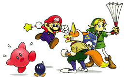
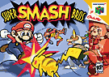
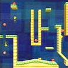
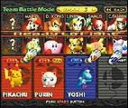
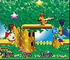
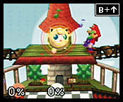
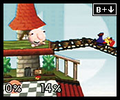

|
|
|
|
|  |

Super Smash Bros |
| 128Mbit
1-4 jugadores
Rumble Pak
Guarda en Cartucho
Valoración: 9 |
¿Cómo es?
|
Rápido, jugable e
inevitablemente divertido. Esa es
quizá la más acertada definición de este juego. Y es
que es imposible que juegues y no lo pases bien, y aún
mejor si puedes disfrutarlo en compañia, pues si es
así, explotarás al máximo sus posibilidades. Pero el juego
también esta por supuesto pensado para jugarse a 1
jugador, en este caso podreis aprovechar para conseguir
algunos de los 4 personajes secretos con los que cuenta.
En un principio se tienen 8 personajes, a
saber: Mario, Pikachu, Donkey Kong, Samus, Kirby, Yoshi,
Fox y Link, cada uno con su escenario particular. Después
hay 4 personajes y 1 escenario más secretos que también
descubriremos como se consiguen.
|
Modos de Juego
|
Tiene 3 modalidades:
MODO TORNEO
| |
Es el modo 1 jugador, en el que te tendrás
que enfrentar a originalísimos personajes, tales como
un ejercito de robots lilas poligonales, el team yoshi o
el metal Mario, y otros impensables como lo es el jefe final
del juego, una blanca mano gigantesta con el único
propósito de aplaudir contigo en medio de sus malignas zarpas.
A medida que te vayas pasando pantallas no faltaran las fases
de bonus, que tendran diferentes metas pero siempre
controlados por un crono que marcará el final de
la prueba. Éstos intermedios tendran como finalidad pisar
un cierto número de plataformas o golpear unos cuantos
objetivos antes que se acabe el tiempo, y si lo haces bien te bonificaran
con un puñadito de agradecidos puntos, aunque lo más probable
es que te caigas de la pantalla (suele pasar a menudo). Cada personaje
tendrá su propio escenario de bonus según sus posibilidades. Y
además, cuando te pasas una fase de bonus en el modo 1 player luego te
permite seleccionarla y jugar cuantas veces quieras con ella desde el menú principal.
En general, el Modo 1 Player esta muy bien ideado, es
divertido, te hace conseguir algunos personajes secretos, tiene en general aliciente...
menos para los bonus, que al final cansan (¡no caigas en
la tentacíon de suicidarte para pasar cuanto antes al siguiente combate!). |



|
| MODO MULTIJUGADOR (VS)
|
|


|
Sin duda el modo multijugador con posibilidad
de hasta 4 jugadores a la vez en pantalla es el que le da renombre a este
grandísimo juego. Contrariamente a lo que pensaría cualquier persona
al ver cualquier captura o imaginarse un combate con 4 jugadores (que si será un
lío...que no se podrá jugar...), Super Smash Bros rompe todas las reglas
convirtiéndose en el juego de lucha más original (y uno de los más jugables) para cualquier consola,
además de aportar numerosas y refrescantes novedades a un género
en el que es muy difícil innovar. En este modo podrás
elegir jugar contra 1, 2 o 3 personajes, bien controlados por el ordenador o
por algún amiguete, y combatir todos contra todos o por equipos.
También permite seleccionar la duración de los combates,
por tiempo o por vidas. Como veis, no faltaran opciones para la más
pura diversión, a surgido un nuevo estilo de lucha a seguir, y cómo no,
ha tenido que ser obra de Nintendo.
|
|
MODO ENTRENAMIENTO
|
|
En este modo, además de poder aprender como funciona este magnífico juego
y cuales son sus secretos, que botones sirven y cuales se repiten...podrás relajarte
apretando el pause justo cuando Pikachu suelta ese increible Trueno, o cuando Kirby
se convierte en ladrillo...y una larga lista de efectos especiales. Cuando apretas pause
la cámara hace un zoom en primer plano de tu personaje y te la permite mover a tu gusto. Esto
se puede hacer en cualquier modo, pero mientras te pegan un montón de guantazos
no te vas a poner a darle al pause... En fin, excelente modo para, sobre todo, practicar
y aprender todos los movimientos de tu personaje favorito, y lo del pause un gran acierto,
muy curioso.
En estas fotos, capturas, screenshots...como querais llamarlos,
teneis algunas de las técnicas o movimientos de algunos personajes y lo que hay que apretar
en el pad para conseguirlo en al esquina superior derecha del cuadro. Si quereis más movimientos ir
a la página oficial de Super Smash Bros (de donde han sido sacadas estas
fotos).
Ir a página oficial de Super Smash Bros
|


|
|
La Web del Videojuego®
lawebdelvideojuego.com
lawebdelvideojuego.com
|
|
|